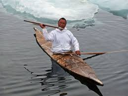
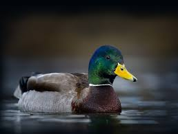

Los Dientes del Diablo
One of our most exciting full-day adventures. Navigate challenging Class IV rapids, explore breathtaking canyon scenery, and experience the ultimate adrenaline rush with our experienced river guides.
Whether you are looking for a thrilling ride through powerful rapids or a relaxing family-friendly river journey, we have the perfect rafting experience for you.
Contact Us to Book Your Trip
One of our most exciting full-day adventures. Navigate challenging Class IV rapids, explore breathtaking canyon scenery, and experience the ultimate adrenaline rush with our experienced river guides.

Perfect for experienced rafters seeking a longer challenge. This two-day expedition combines exciting rapids, riverside camping, and stunning wilderness views for an unforgettable outdoor experience.

A great choice for families, beginners, and groups looking for a safe introduction to white water rafting. Enjoy scenic river sections, gentle rapids, and plenty of opportunities to create lasting memories.
| Trip Name | Duration | Difficulty | Minimum Age | Price |
|---|---|---|---|---|
| Los Dientes del Diablo | Full Day | Advanced | 16 Years | $120 |
| Big Mallard | 2 Days | Intermediate | 14 Years | $200 |
| Half Day Adventure | 4 Hours | Beginner | 8 Years | $75 |
| River Challenge | Full Day | Intermediate | 12 Years | $110 |
| Rapid Thunder | 6 Hours | Advanced | 15 Years | $140 |